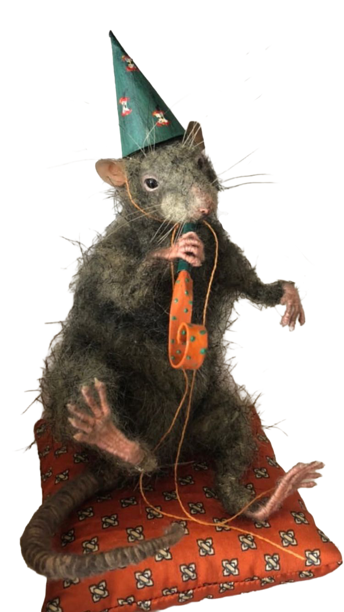

Personal Introduction: At first, taxidermy was something I thought only museums and hunters used and admired. That all changed when I found oddities stores that sell these works of art on the daily. I was in awe — just seeing how people can manipulate dead animals and bones into interesting art pieces. The way artists reinterpret nature, memory, and life through preserved specimens really opened my eyes to a whole new form of creative expression.
The World of Ethical Taxidermy: Modern ethical taxidermy is a creative and evolving art form that stands in contrast to the traditional image of hunters displaying trophies. Contemporary practitioners, often based in urban settings, pursue taxidermy as a craft rooted in respect for animals and artistic innovation rather than a celebration of hunting culture. Many taxidermists acquire specimens that have died naturally or ethically, distancing their work from unnecessary harm and engaging deeply with ideas of life, death, and transformation.
Ethical taxidermists often focus on smaller creatures such as birds and rodents, transforming them through artistic techniques into sculptures or compositions that depart from realistic representations. These artists infuse their work with emotion, humor, and reverence, pushing past simple imitation to explore new visual forms that honor the animal while challenging perceptions of what taxidermy can be.
Historical Roots and Evolution: The term “taxidermy” comes from the Greek words for “arrangement” and “skin,” a nod to the craft’s centuries-old history. In the Victorian era, taxidermy was used for scientific study and decorative displays reflecting curiosity about the natural world. Later, throughout the 20th century, traditional taxidermy became closely associated with rural hunting culture and large game trophies. Today’s ethical and artistic taxidermists draw on that rich history while redefining what it means to preserve and present animal forms.
